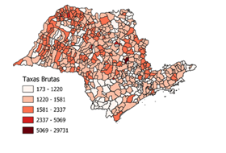
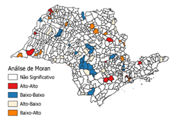
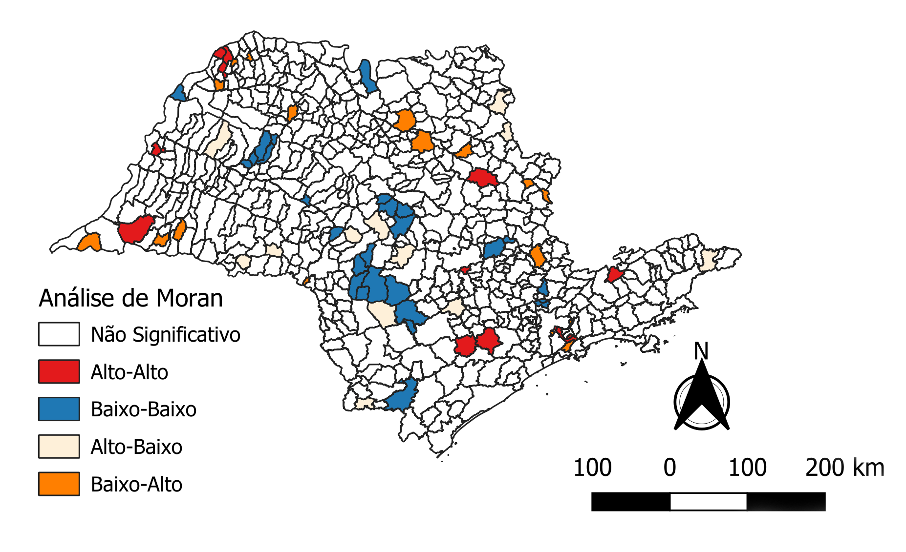
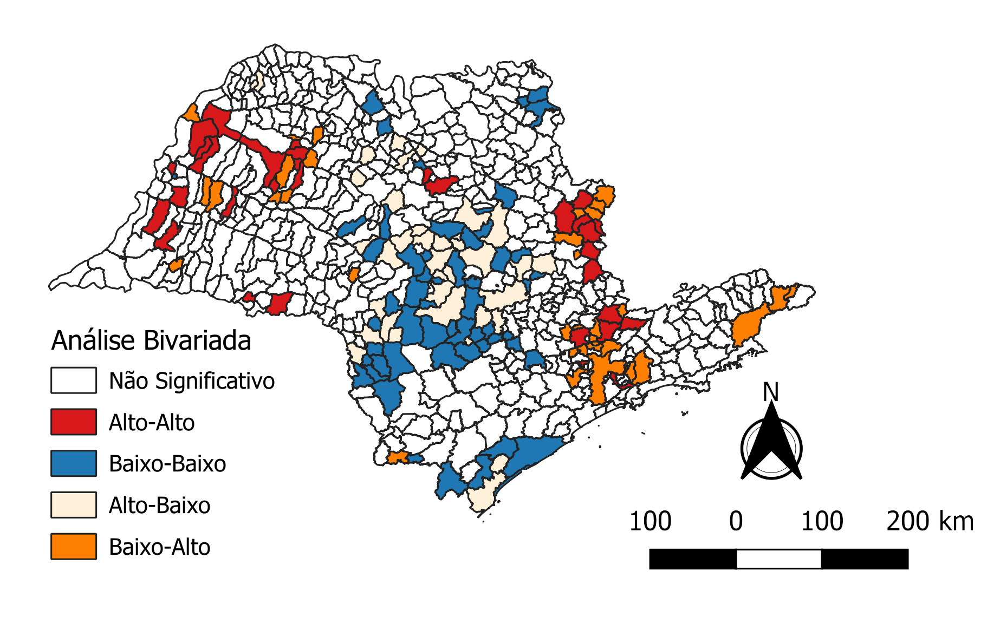
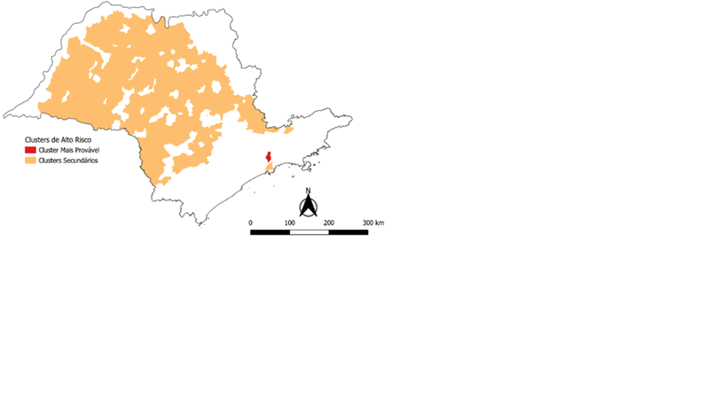

🌐
Índice de Moran Global
Taxa de Mortalidade
Taxa de Mortalidade
-0,00694
p = 0,395
Não significativo
Não há autocorrelação espacial global significativa.
🌐
Índice de Moran Global
Mortalidade × Tempo de Espera
Mortalidade × Tempo de Espera
-0,044
p = 0,310
Não significativo
Não há associação espacial global entre mortalidade e tempo de espera.
A Taxas Brutas (óbitos por 100 mil hab.)

B Taxas Suavizadas (óbitos por 100 mil hab.)

C Análise de Moran Local (Univariada)

D Análise de Moran Local (Bivariada: Mort. × Tempo)

Principais achados
Maiores taxas de mortalidade concentram-se principalmente nas regiões Norte e Oeste do estado (taxas suavizadas).
Clusters Alto-Alto identificados no Noroeste, Nordeste e pontos do Oeste paulista.
Clusters Baixo-Baixo predominam no Centro-Sul, com dispersões no Sudoeste e Nordeste.
Não há associação espacial global entre mortalidade e tempo de espera para início do tratamento.
Aglomerados espaço-temporais de taxas anuais de mortalidade por neoplasias (2013–2023)
| Aglomerado | Período | Municípios | Mortes | Mortes esperadas | Taxa anual de mortalidade* | RR | LLR | p |
|---|---|---|---|---|---|---|---|---|
| 1 | 2019–2023 | 1 | 1.590 | 21,64 | 9.137,6 | 73,65 | 5.265,53 | 0,001 |
| 2 | 2019–2023 | 246 | 60.193 | 51.918,09 | 144,2 | 1,18 | 688,12 | 0,001 |
| 3 | 2019–2023 | 1 | 361 | 26,27 | 1.709,0 | 13,75 | 611,29 | 0,001 |
| 4 | 2019–2023 | 1 | 4.299 | 2.699,76 | 198,1 | 1,60 | 402,83 | 0,001 |
| 5 | 2019–2023 | 19 | 6.581 | 5.390,23 | 151,9 | 1,22 | 123,95 | 0,001 |
RR = risco relativo em comparação com o resto da região; LLR = razão de verossimilhança
*Coeficiente de mortalidade por neoplasias (por 100 mil habitantes) durante o período de agrupamento.
*Coeficiente de mortalidade por neoplasias (por 100 mil habitantes) durante o período de agrupamento.
Distribuição dos aglomerados espaço-temporais (2013–2023)

Cluster mais provável (RR mais alto)
Clusters secundários (RR moderado) — 246 municípios
Não significativo
Um cluster principal (vermelho) com RR extremamente elevado foi identificado em um único município próximo ao litoral (RR 73,65).
Clusters secundários (laranja) abrangem 246 municípios distribuídos por grande parte do território paulista, com RR entre 1,18 e 13,75.
Clusters secundários (laranja) abrangem 246 municípios distribuídos por grande parte do território paulista, com RR entre 1,18 e 13,75.